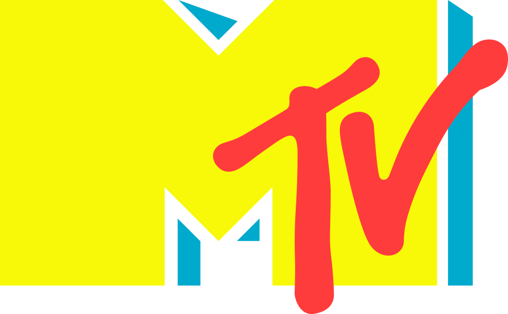
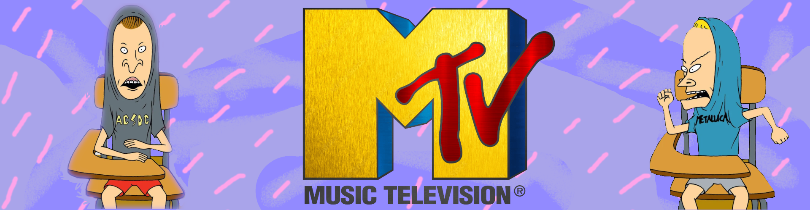

Americká MTV (zkratka z Music Television) je první výhradně hudební televizní stanice na světě. Založena byla 1. srpna 1981 společnostmi Warner a AmEx a své vysílání zahájila příznačně písní Video Killed the Radio Star od skupiny Buggles. Vysílání bylo ihned od počátku 24 hodiny denně. V dnešní době vysílá stanice v mnoha jazykových mutacích, dříve vysílala i česká verze MTV Czech.

Koncem osmdesátých let MTV začíná tvořit vlastní programy jako např. Club MTV, Week In Rock nebo YO!MTV Raps. Vysílání pro Evropu je realizováno z londýnského studia, které v historii MTV zůstává kultovním. V devadesátých letech se MTV rozšiřuje do celého světa. Věhlas si získala pořady jako MTV Unplugged. Známé jsou také hudební ceny MTV Music Awards & MTV Europe Music Awards. V roce 2026 skončila MTV s vysíláním hudební produkce na všech svých kanálech po celém světě vyjma kanálů v USA. V provozu nadále zůstaly televizní stanice, které vysílají zejména formát reality show.
Od svého startu MTV zrevolucionalizovala hudební průmysl. Slogany jako "Chci svou MTV" se staly součástí veřejného povědomí, koncept VJ (video žokej) se stal populárním, představa specializovaného video kanálu pro hudbu byla zavedena a jak umělci, tak fanoušci našli centrální místo pro hudební akce, zprávy a propagaci. MTV bylo také nesčetněkrát zmiňováno hudebníky, dalšími televizními kanály a pořady, filmy a knihami.
Morální vliv MTV na mladé lidi, včetně příkladů cenzury a sociálního aktivismu na kanálu, je předmětem debat už léta. Rozhodnutí MTV zaměřit se na nehudební programy bylo také neustále zpochybňováno, což ukazuje pokračující dopad kanálu na populární kulturu.
MTV přetvořila hudební průmysl tím, že videa učinila středobodem propagace a později redefinovala mládežnickou kulturu prostřednictvím hitů jako The Real World a Jersey Shore.

MTV debutovala krátce po půlnoci 1. srpna 1981 s vysíláním písně "Video Killed the Radio Star" od skupiny The Buggles. Podle formátu Top 40 rádia videodiskžokejové (nebo "veejays") představovali videa a mezi klipy si povídali o hudebních novinkách. Po počátečním rozmachu se síť v prvních letech potýkala s problémy. Zásobník hudebních videí byl tehdy poměrně povrchní, což vedlo k častému opakování klipů, a kabelová televize zůstávala luxusem, který si svůj trh ještě nenašel.
MTV rozšířila svůj program o rhythm and blues umělce a síť se rozjela. Singly jako "Billie Jean" a "Beat It" z alba Thriller Michaela Jacksona (1982) nejen ukázaly silné stránky formátu hudebních videí, ale také dokázaly, že expozice na MTV může posunout umělce k superstardom.
Síť přinesla úspěch nováčkům jako Madonna a new wave ikonám Duran Duran, kteří používali stále sofistikovanější techniky, aby vizuální prvky videa byly stejně důležité jako hudba. MTV také oživila zkušené interprety jako ZZ Top, Tina Turner a Peter Gabriel, kteří díky častému vysílání svých videí dosáhli největších hitů své kariéry. V polovině 80. let MTV výrazně ovlivnila filmy, reklamy a televizi. Změnilo to také hudební průmysl; vypadat dobře (nebo alespoň zajímavě) na MTV se stalo stejně důležitým jako dobře znít při prodeji nahrávek.
V roce 1985 koupil zábavní konglomerát Viacom Inc. MTV Networks, mateřskou společnost MTV, od Warner Communications Inc., a změna obsahu byla dramatická i okamžitá. Místo volných playlistů hudby, které pokrývaly celou směnu veejaye, byly videa balena do samostatných bloků podle žánru. To vedlo ke vzniku specializovaných pořadů jako 120 Minutes (alternativní rock), Headbangers Ball (heavy metal) a Yo! MTV Raps (hip-hop). Brzy se v programu MTV začaly objevovat soutěžní pořady, reality show, animované kreslené seriály a telenovely a síť přesunula zaměření z hudby na popkulturu zaměřenou na mládež.
V polovině 90. let byla většina denního programu MTV věnována pořadům, které nesouvisely s hudbou. Její sesterská stanice VH1 vysílala rocková videa pro dospělé od roku 1985 a brzy zaplnila mezeru originálním obsahem, jako je Pop Up Video a dokumentární série Behind the Music. MTV Networks spustily MTV2 v roce 1996 s cílem znovu zachytit ducha, který ztělesňovala jejich reklamní kampaň "Chci své MTV" v 80. letech. MTV2 začínala se stejnou volnou strukturou, která charakterizovala rané MTV, ale brzy se přesunula k žánrově specifickým pořadům. Do roku 2005 MTV2 následovala stejnou cestu jako mateřská síť, přičemž většinu programu tvořily reality show, celebrity a komedie.
Zatímco hudba měla na MTV menší zastoupení, videa zůstávala důležitá pro síť i její image. Od roku 1984 MTV oceňovala úspěchy v tomto formátu každoročními Video Music Awards. Total Request Live (TRL), hodinový rozhovor a hudební video, měl premiéru v roce 1998 a byl moderátorem všedního programu.
Na počátku 21. století se MTV stále více snažila pozici jako hudební destinace na internetu. Její webové stránky nabízely streamované video a audio obsah a v roce 2007 spustila Rhapsody America, společný podnik s RealNetworks a Verizon Wireless, jako předplatitelskou alternativu k Apple Inc. nesmírně populární iTunes; v roce 2010 byla odštěpena jako nezávislá společnost Rhapsody International. Částečně kvůli popularitě sledování hudebních videí na internetu byl TRL zrušen v roce 2008, ale v roce 2017 se vrátil.
Kromě svých amerických stanic MTV udržovala několik kanálů po celém kontinentu a řadu kanálů specifických pro jednotlivé země po celém světě. V 10. letech 21. století se MTV více zaměřila na reality programy, přičemž značku nesly franšízy jako Jersey Shore, i když hudební videa migrovala na online platformy jako YouTube. Vliv sítě v éře streamování slábl, ale zůstala součástí ViacomCBS (v roce 2022 přejmenované na Paramount Global) a po fúzi v roce 2025 také Paramount Skydance Corporation